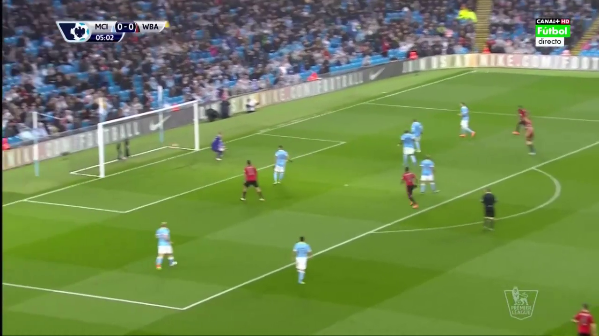
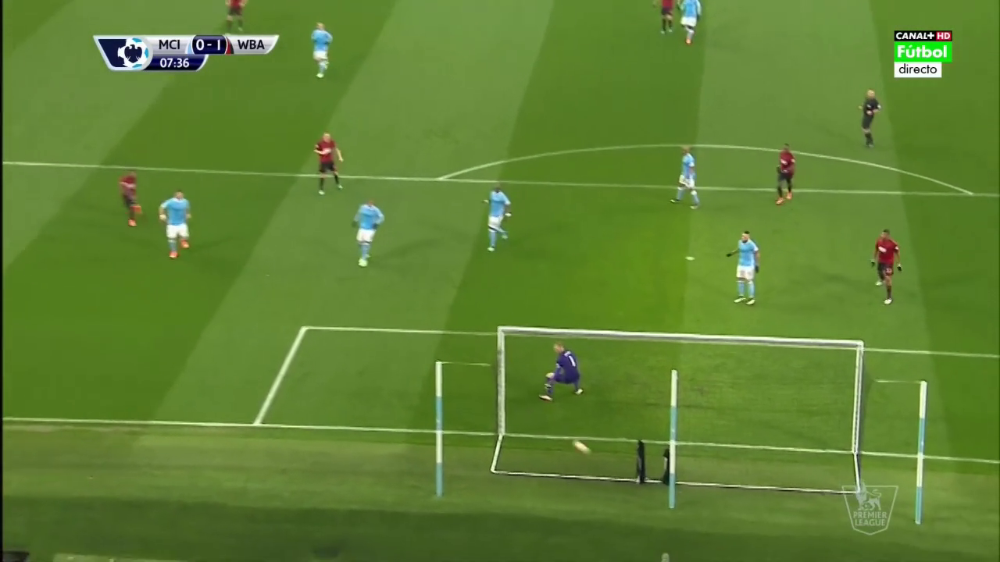
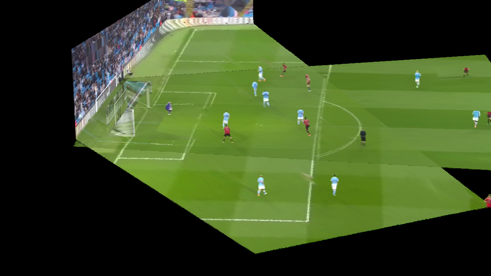
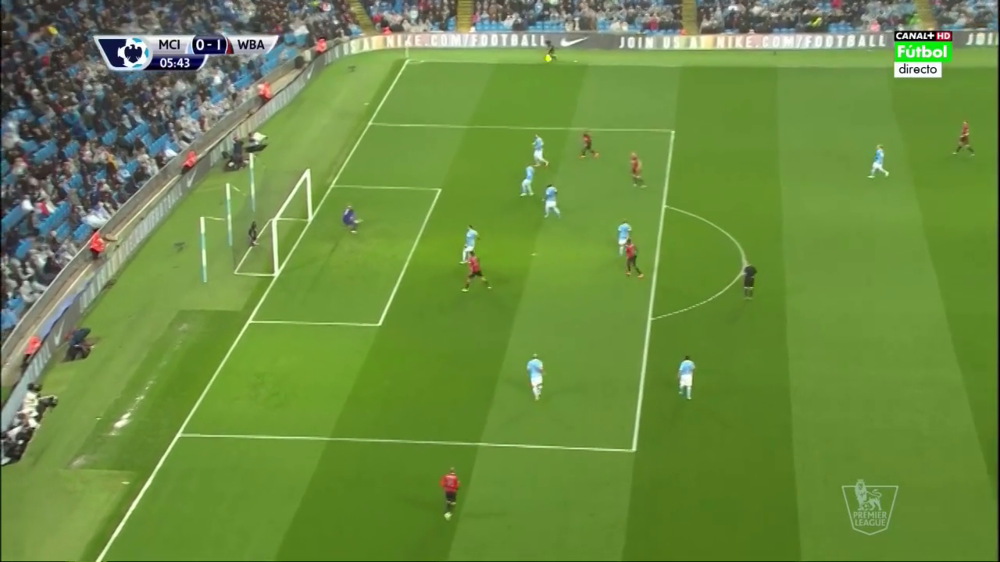

Select Match:
Input View 1

Input View 2

Transition
Single image
Transition Between Views
Default
Linear Interpolation
Your browser does not support the video tag.
Comparison: Simulated (Left) vs. Actual (Right)
 